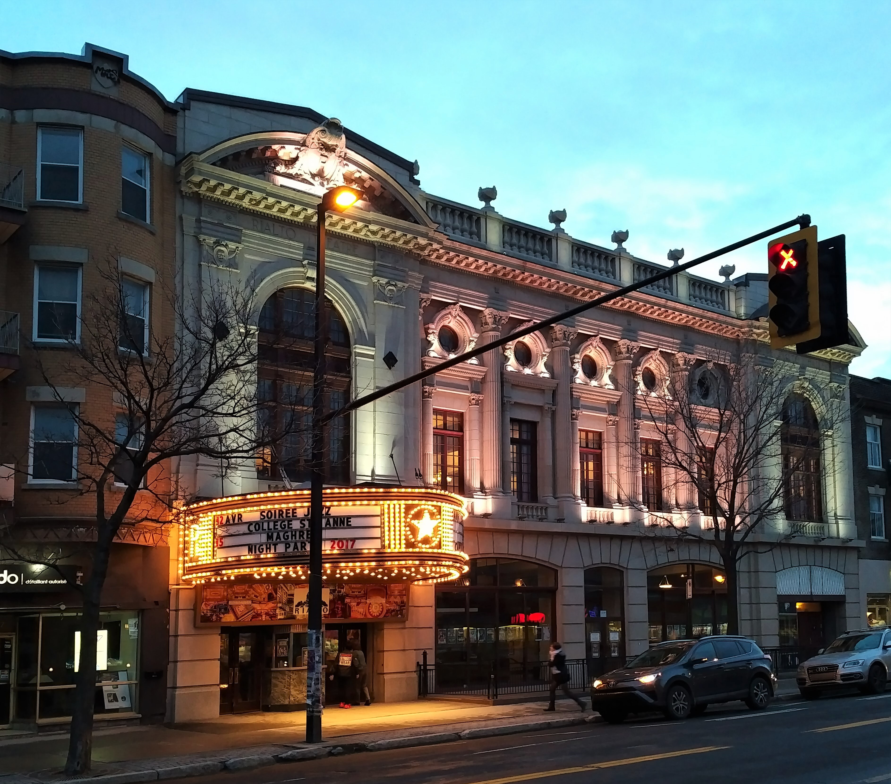

Projets Futurs
Nous sommes une compagnie en pleine expansion et nous pensons que vous aimeriez connaître certains de nos projets. Nous voulons nous faire connaître davantage pour égaler et dépasser nos compétiteurs. C'est pour cela que nous désirons faire des spectacles à plus grande échelle, dans d'autres salles et avoir un plus grand choix de cours.
Types de danse
Nous désirons éventuellement ajouter certains types de danse afin d'agrandir notre diversité. De plus amples détails s'ajouterons d'ici peu. Voici nos prochains ajouts:
Danses traditionnelles japonaises
Danse Bon-Odori Description: Danse en cercle généralement facile à apprendre.
Danse de geisha  Description: Danse avec une démarche élégante.
Description: Danse avec une démarche élégante.
Danses traditionnelles chinoises
Informations à venir.
Salles de spectacle
Afin de mieux nous faire connaître, nous souhaitons pouvoir participer à différents évènements et de nous faire inviter à participer à des spectacles et dans de nouvelles salles, voire même dans d'autres pays. Depuis quelques années, nous nous donnons en spectacle au Palace de Granby, qui peut accueillir jusqu'à 952 personnes.
En 2015, nous avons été invités à participer au spectacle du SERY, ce qui est un bon début.
Nous souhaitons continuer sur cette voie en allant faire des prestations à Montréal, comme au théâtre Rialto (1165 personnes), 